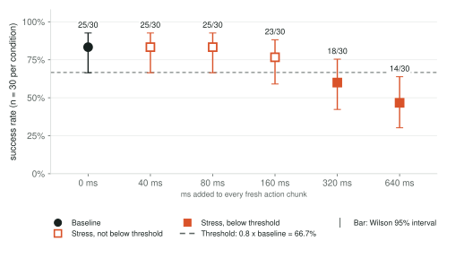
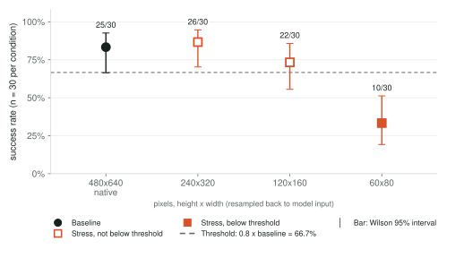
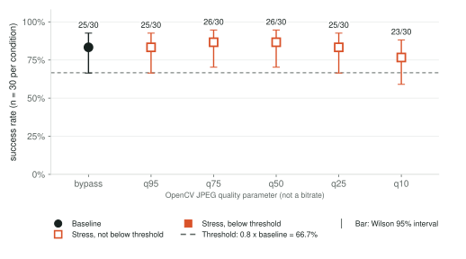
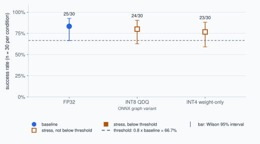
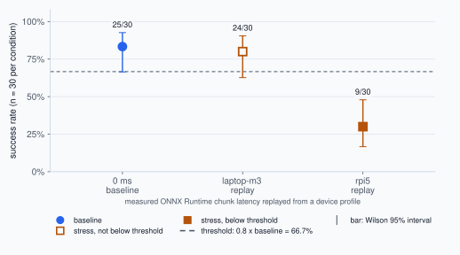
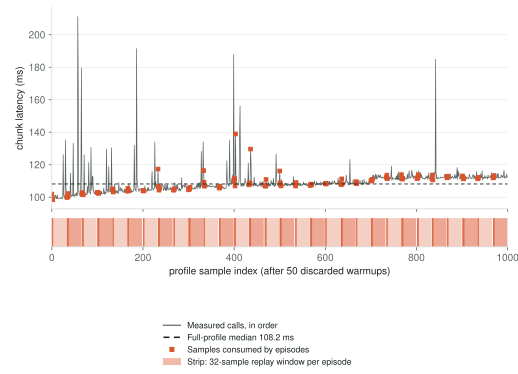
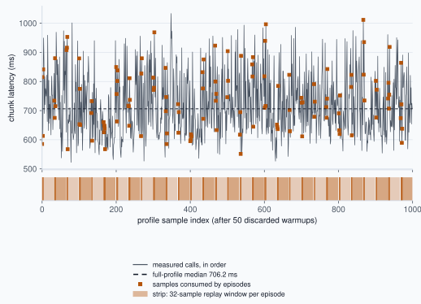

Breakpoint · ACT deployment stress benchmark · exploratory
ACT cube transfer under isolated stress
600 episode records · 30 paired episodes per condition · env seeds 5000–5029
Summary
- What was evaluated
- One pretrained ACT policy (
lerobot/act_aloha_sim_transfer_cube_human) on the ALOHA TransferCube task in simulation, run as ONNX Runtime on CPU. No physical robot is involved. - What changed
- One stress at a time, everything else at baseline.
- Constant added delay: 0 ms (baseline), 40 ms, 80 ms, 160 ms, 320 ms, 640 ms
- Camera resolution: 480x640 native (baseline), 240x320, 120x160, 60x80
- JPEG quality: bypass (baseline), q95, q75, q50, q25, q10
- Numeric precision: FP32 (baseline), INT8 QDQ
- Device latency replay: 0 ms (baseline), laptop-m3 replay, rpi5 replay
- What the evidence shows
- Paired seeds, so every condition faces the same episodes as the baseline.
- Baseline (ONNX FP32, native image, 0 ms delay): 25/30 (83.3%; Wilson 95% 66.4% to 92.7%).
- Constant added delay: first grid point below 0.8 x baseline is 320 ms at 18/30 (interval includes threshold).
- Camera resolution: first grid point below 0.8 x baseline is 60x80 at 10/30.
- JPEG quality: no condition fell below 0.8 x baseline.
- Numeric precision (categorical comparison, no ordering) against 0.8 x baseline: INT8 QDQ 24/30 not below.
- Device latency replay (categorical comparison, no ordering) against 0.8 x baseline: laptop-m3 replay 24/30 not below; rpi5 replay 9/30 below.
Exploratory simulation run with 30 paired episodes per condition. Intervals are wide, the results have not been confirmed with fresh seeds, and a grid point below the threshold is not an exact boundary. The rpi5 replay reflects one throttled Pi state.
Validation, errors and caveats
- Errors: 0 runtime errors or policy failures in 600 episode records. Outcomes: 445 success, 155 time_limit_truncation.
- Unsupported conditions: none skipped. INT8 export status is 'ok' and the INT8 graph ran in every planned episode. The INT8 graph has no FP32 numerical-parity requirement; see the provenance section for its recorded chunk error.
- Baseline strength: 25/30 (83.3%) against the project floor of 0.5. The baseline is not weak by that floor.
- Sample size: 30 paired episodes per condition. Intervals are wide; the run is exploratory and does not locate an exact boundary.
- Unresolved threshold comparisons (Wilson interval includes the threshold; the threshold is estimated from the same baseline, so this overlap is not a paired significance test): Constant added delay: 40 ms, 80 ms, 160 ms, 320 ms; Camera resolution: 120x160; JPEG quality: q95, q25, q10; Numeric precision: INT8 QDQ; Device latency replay: laptop-m3 replay.
- Resolution ordering: the saved summary stored the same ordered value for every resolution, so conditions are ordered by plan order (native, 240x320, 120x160, 60x80), which is mild to severe.
- Pi 5 timings were captured while throttling was reported in 304 of 393 telemetry samples; cooling and power were not recorded.
18 simulated runs back 21 condition rows; the shared baseline is reused by reference.
Results by stress axis. Choose one:
Constant added delay
Stress variable: ms added to every fresh action chunk.

| Condition | Successes | Rate | Wilson 95% interval | Against threshold |
|---|---|---|---|---|
| 0 ms (baseline) | 25/30 | 83.3% | 66.4% to 92.7% | baseline |
| 40 ms | 25/30 | 83.3% | 66.4% to 92.7% | not below threshold; interval spans threshold |
| 80 ms | 25/30 | 83.3% | 66.4% to 92.7% | not below threshold; interval spans threshold |
| 160 ms | 23/30 | 76.7% | 59.1% to 88.2% | not below threshold; interval spans threshold |
| 320 ms | 18/30 | 60.0% | 42.3% to 75.4% | below threshold; interval spans threshold |
| 640 ms | 14/30 | 46.7% | 30.2% to 63.9% | below threshold |
Saved summary: on this exploratory grid the first point below threshold is 320 ms; the observed crossing lies between 160 ms and 320 ms. Observed interval only; not an interpolated exact boundary.
Wilson interval includes the threshold (unresolved at n=30; an interval overlap, not a paired significance test): 40 ms, 80 ms, 160 ms, 320 ms.
Paired outcomes by seed
| Condition | Paired with baseline seeds | Bootstrap interval |
|---|---|---|
0 ms (baseline)latency_ms_0 | reference | n/a |
40 mslatency_ms_40 | lost 0 · gained 0 · both succeeded 25 · neither 5 | +0.167 [+0.140, +0.193] |
80 mslatency_ms_80 | lost 0 · gained 0 · both succeeded 25 · neither 5 | +0.167 [+0.140, +0.193] |
160 mslatency_ms_160 | lost 4 · gained 2 · both succeeded 21 · neither 3 | +0.100 [-0.053, +0.233] |
320 mslatency_ms_320 | lost 9 · gained 2 · both succeeded 16 · neither 3 | -0.067 [-0.253, +0.127] |
640 mslatency_ms_640 | lost 13 · gained 2 · both succeeded 12 · neither 3 | -0.200 [-0.407, -0.013] |
| condition | 00 | 01 | 02 | 03 | 04 | 05 | 06 | 07 | 08 | 09 | 10 | 11 | 12 | 13 | 14 | 15 | 16 | 17 | 18 | 19 | 20 | 21 | 22 | 23 | 24 | 25 | 26 | 27 | 28 | 29 |
|---|---|---|---|---|---|---|---|---|---|---|---|---|---|---|---|---|---|---|---|---|---|---|---|---|---|---|---|---|---|---|
| 0 ms | ● | ● | ● | ● | ● | ● | ● | ○ | ● | ○ | ● | ● | ● | ● | ● | ● | ● | ● | ● | ○ | ● | ● | ● | ○ | ● | ● | ● | ○ | ● | ● |
| 40 ms | ● | ● | ● | ● | ● | ● | ● | ○ | ● | ○ | ● | ● | ● | ● | ● | ● | ● | ● | ● | ○ | ● | ● | ● | ○ | ● | ● | ● | ○ | ● | ● |
| 80 ms | ● | ● | ● | ● | ● | ● | ● | ○ | ● | ○ | ● | ● | ● | ● | ● | ● | ● | ● | ● | ○ | ● | ● | ● | ○ | ● | ● | ● | ○ | ● | ● |
| 160 ms | ● | ● | ● | ▼ | ● | ● | ● | ○ | ● | ▲ | ● | ● | ● | ● | ● | ● | ● | ● | ▼ | ○ | ● | ▼ | ● | ▲ | ▼ | ● | ● | ○ | ● | ● |
| 320 ms | ● | ● | ● | ▼ | ● | ● | ▼ | ▲ | ● | ○ | ● | ● | ● | ▼ | ▼ | ● | ● | ▼ | ▼ | ○ | ● | ▼ | ● | ○ | ▼ | ● | ● | ▲ | ▼ | ● |
| 640 ms | ▼ | ● | ▼ | ▼ | ● | ▼ | ▼ | ○ | ● | ○ | ▼ | ● | ● | ▼ | ▼ | ● | ● | ▼ | ● | ○ | ● | ▼ | ● | ▲ | ▼ | ● | ▼ | ▲ | ● | ▼ |
● success ○ no success (same as baseline) ▼ baseline succeeded, condition did not ▲ baseline did not succeed, condition did
Evidence and condition IDs
- Synthetic constant delay; precision held at onnx_fp32.
- 0 ms:
latency_ms_0 - 40 ms:
latency_ms_40 - 80 ms:
latency_ms_80 - 160 ms:
latency_ms_160 - 320 ms:
latency_ms_320 - 640 ms:
latency_ms_640
Camera resolution
Stress variable: pixels, height x width (resampled back to model input).

| Condition | Successes | Rate | Wilson 95% interval | Against threshold |
|---|---|---|---|---|
| 480x640 native (baseline) | 25/30 | 83.3% | 66.4% to 92.7% | baseline |
| 240x320 | 26/30 | 86.7% | 70.3% to 94.7% | not below threshold |
| 120x160 | 22/30 | 73.3% | 55.6% to 85.8% | not below threshold; interval spans threshold |
| 60x80 | 10/30 | 33.3% | 19.2% to 51.2% | below threshold |
Saved summary: on this exploratory grid the first point below threshold is 60x80; the observed crossing lies between 120x160 and 60x80. Observed interval only; not an interpolated exact boundary.
Wilson interval includes the threshold (unresolved at n=30; an interval overlap, not a paired significance test): 120x160.
Paired outcomes by seed
| Condition | Paired with baseline seeds | Bootstrap interval |
|---|---|---|
480x640 native (baseline)resolution_native | reference | n/a |
240x320resolution_capture_240x320 | lost 3 · gained 4 · both succeeded 22 · neither 1 | +0.200 [+0.047, +0.347] |
120x160resolution_capture_120x160 | lost 6 · gained 3 · both succeeded 19 · neither 2 | +0.067 [-0.120, +0.233] |
60x80resolution_capture_60x80 | lost 17 · gained 2 · both succeeded 8 · neither 3 | -0.333 [-0.527, -0.127] |
| condition | 00 | 01 | 02 | 03 | 04 | 05 | 06 | 07 | 08 | 09 | 10 | 11 | 12 | 13 | 14 | 15 | 16 | 17 | 18 | 19 | 20 | 21 | 22 | 23 | 24 | 25 | 26 | 27 | 28 | 29 |
|---|---|---|---|---|---|---|---|---|---|---|---|---|---|---|---|---|---|---|---|---|---|---|---|---|---|---|---|---|---|---|
| 480x640 native | ● | ● | ● | ● | ● | ● | ● | ○ | ● | ○ | ● | ● | ● | ● | ● | ● | ● | ● | ● | ○ | ● | ● | ● | ○ | ● | ● | ● | ○ | ● | ● |
| 240x320 | ● | ● | ● | ● | ▼ | ● | ● | ○ | ● | ▲ | ● | ● | ● | ▼ | ● | ● | ● | ● | ● | ▲ | ▼ | ● | ● | ▲ | ● | ● | ● | ▲ | ● | ● |
| 120x160 | ● | ● | ● | ▼ | ▼ | ● | ▼ | ○ | ● | ▲ | ● | ● | ● | ▼ | ● | ● | ● | ● | ● | ○ | ● | ● | ▼ | ▲ | ● | ● | ● | ▲ | ▼ | ● |
| 60x80 | ● | ● | ▼ | ▼ | ▼ | ▼ | ● | ▲ | ▼ | ○ | ▼ | ● | ▼ | ▼ | ● | ▼ | ▼ | ▼ | ▼ | ○ | ▼ | ● | ▼ | ○ | ▼ | ● | ● | ▲ | ▼ | ▼ |
● success ○ no success (same as baseline) ▼ baseline succeeded, condition did not ▲ baseline did not succeed, condition did
Evidence and condition IDs
- Resolution axis only; latency and precision at defaults.
- 480x640 native:
resolution_native - 240x320:
resolution_capture_240x320 - 120x160:
resolution_capture_120x160 - 60x80:
resolution_capture_60x80
JPEG quality
Stress variable: OpenCV JPEG quality parameter (not a bitrate).

| Condition | Successes | Rate | Wilson 95% interval | Against threshold |
|---|---|---|---|---|
| bypass (baseline) | 25/30 | 83.3% | 66.4% to 92.7% | baseline |
| q95 | 25/30 | 83.3% | 66.4% to 92.7% | not below threshold; interval spans threshold |
| q75 | 26/30 | 86.7% | 70.3% to 94.7% | not below threshold |
| q50 | 26/30 | 86.7% | 70.3% to 94.7% | not below threshold |
| q25 | 25/30 | 83.3% | 66.4% to 92.7% | not below threshold; interval spans threshold |
| q10 | 23/30 | 76.7% | 59.1% to 88.2% | not below threshold; interval spans threshold |
Saved summary: no condition fell below the threshold within the tested range.
Wilson interval includes the threshold (unresolved at n=30; an interval overlap, not a paired significance test): q95, q25, q10.
Paired outcomes by seed
| Condition | Paired with baseline seeds | Bootstrap interval |
|---|---|---|
bypass (baseline)jpeg_bypass | reference | n/a |
q95jpeg_q95 | lost 1 · gained 1 · both succeeded 24 · neither 4 | +0.167 [+0.073, +0.253] |
q75jpeg_q75 | lost 2 · gained 3 · both succeeded 23 · neither 2 | +0.200 [+0.067, +0.327] |
q50jpeg_q50 | lost 3 · gained 4 · both succeeded 22 · neither 1 | +0.200 [+0.047, +0.347] |
q25jpeg_q25 | lost 4 · gained 4 · both succeeded 21 · neither 1 | +0.167 [-0.007, +0.333] |
q10jpeg_q10 | lost 7 · gained 5 · both succeeded 18 · neither 0 | +0.100 [-0.100, +0.293] |
| condition | 00 | 01 | 02 | 03 | 04 | 05 | 06 | 07 | 08 | 09 | 10 | 11 | 12 | 13 | 14 | 15 | 16 | 17 | 18 | 19 | 20 | 21 | 22 | 23 | 24 | 25 | 26 | 27 | 28 | 29 |
|---|---|---|---|---|---|---|---|---|---|---|---|---|---|---|---|---|---|---|---|---|---|---|---|---|---|---|---|---|---|---|
| bypass | ● | ● | ● | ● | ● | ● | ● | ○ | ● | ○ | ● | ● | ● | ● | ● | ● | ● | ● | ● | ○ | ● | ● | ● | ○ | ● | ● | ● | ○ | ● | ● |
| q95 | ● | ● | ● | ● | ● | ● | ● | ○ | ● | ▲ | ● | ● | ● | ● | ● | ● | ● | ▼ | ● | ○ | ● | ● | ● | ○ | ● | ● | ● | ○ | ● | ● |
| q75 | ● | ● | ● | ● | ● | ● | ● | ▲ | ● | ▲ | ▼ | ● | ● | ● | ● | ● | ● | ▼ | ● | ○ | ● | ● | ● | ○ | ● | ● | ● | ▲ | ● | ● |
| q50 | ● | ● | ● | ● | ▼ | ● | ● | ▲ | ● | ▲ | ● | ● | ● | ● | ● | ● | ● | ▼ | ● | ○ | ● | ● | ● | ▲ | ▼ | ● | ● | ▲ | ● | ● |
| q25 | ● | ● | ● | ● | ▼ | ● | ● | ▲ | ● | ▲ | ● | ● | ● | ● | ● | ● | ● | ▼ | ● | ○ | ● | ● | ● | ▲ | ● | ● | ▼ | ▲ | ▼ | ● |
| q10 | ● | ● | ● | ▼ | ● | ● | ▼ | ▲ | ● | ▲ | ▼ | ▼ | ● | ▼ | ▼ | ● | ▼ | ● | ● | ▲ | ● | ● | ● | ▲ | ● | ● | ● | ▲ | ● | ● |
● success ○ no success (same as baseline) ▼ baseline succeeded, condition did not ▲ baseline did not succeed, condition did
Evidence and condition IDs
- JPEG visual-quality axis only; native resolution.
- bypass:
jpeg_bypass - q95:
jpeg_q95 - q75:
jpeg_q75 - q50:
jpeg_q50 - q25:
jpeg_q25 - q10:
jpeg_q10
Numeric precision
Stress variable: ONNX graph variant.

| Condition | Successes | Rate | Wilson 95% interval | Against threshold |
|---|---|---|---|---|
| FP32 (baseline) | 25/30 | 83.3% | 66.4% to 92.7% | baseline |
| INT8 QDQ | 24/30 | 80.0% | 62.7% to 90.5% | not below threshold; interval spans threshold |
Categorical comparison against the baseline: the conditions have no order, so no breakpoint is estimated. No condition's point estimate is below the threshold.
Wilson interval includes the threshold (unresolved at n=30; an interval overlap, not a paired significance test): INT8 QDQ.
Paired outcomes by seed
| Condition | Paired with baseline seeds | Bootstrap interval |
|---|---|---|
FP32 (baseline)precision_onnx_fp32 | reference | n/a |
INT8 QDQprecision_int8 | lost 4 · gained 3 · both succeeded 21 · neither 2 | +0.133 [-0.020, +0.287] |
| condition | 00 | 01 | 02 | 03 | 04 | 05 | 06 | 07 | 08 | 09 | 10 | 11 | 12 | 13 | 14 | 15 | 16 | 17 | 18 | 19 | 20 | 21 | 22 | 23 | 24 | 25 | 26 | 27 | 28 | 29 |
|---|---|---|---|---|---|---|---|---|---|---|---|---|---|---|---|---|---|---|---|---|---|---|---|---|---|---|---|---|---|---|
| FP32 | ● | ● | ● | ● | ● | ● | ● | ○ | ● | ○ | ● | ● | ● | ● | ● | ● | ● | ● | ● | ○ | ● | ● | ● | ○ | ● | ● | ● | ○ | ● | ● |
| INT8 QDQ | ● | ● | ▼ | ● | ● | ● | ● | ○ | ● | ▲ | ● | ● | ▼ | ● | ● | ● | ● | ▼ | ▼ | ▲ | ● | ● | ● | ▲ | ● | ● | ● | ○ | ● | ● |
● success ○ no success (same as baseline) ▼ baseline succeeded, condition did not ▲ baseline did not succeed, condition did
Evidence and condition IDs
- Precision under constant_latency_ms_0.
- FP32:
precision_onnx_fp32 - INT8 QDQ:
precision_int8
Device latency replay
Stress variable: measured ONNX Runtime chunk latency replayed from a device profile.

| Condition | Successes | Rate | Wilson 95% interval | Against threshold |
|---|---|---|---|---|
| 0 ms (baseline) | 25/30 | 83.3% | 66.4% to 92.7% | baseline |
| laptop-m3 replay | 24/30 | 80.0% | 62.7% to 90.5% | not below threshold; interval spans threshold |
| rpi5 replay | 9/30 | 30.0% | 16.7% to 47.9% | below threshold |
No saved experiment summary exists for this axis; counts, intervals, and paired tables are derived by this report from the episode records. Categorical comparison against the baseline: the conditions have no order, so no breakpoint is estimated. Point estimate below threshold: rpi5 replay.
Wilson interval includes the threshold (unresolved at n=30; an interval overlap, not a paired significance test): laptop-m3 replay.
Paired outcomes by seed
| Condition | Paired with baseline seeds | Bootstrap interval |
|---|---|---|
0 ms (baseline)latency_ms_0 | reference | n/a |
laptop-m3 replaydevice_profile_laptop-m3_fp32 | lost 2 · gained 1 · both succeeded 23 · neither 4 | n/a |
rpi5 replaydevice_profile_rpi5_fp32 | lost 17 · gained 1 · both succeeded 8 · neither 4 | n/a |
| condition | 00 | 01 | 02 | 03 | 04 | 05 | 06 | 07 | 08 | 09 | 10 | 11 | 12 | 13 | 14 | 15 | 16 | 17 | 18 | 19 | 20 | 21 | 22 | 23 | 24 | 25 | 26 | 27 | 28 | 29 |
|---|---|---|---|---|---|---|---|---|---|---|---|---|---|---|---|---|---|---|---|---|---|---|---|---|---|---|---|---|---|---|
| 0 ms | ● | ● | ● | ● | ● | ● | ● | ○ | ● | ○ | ● | ● | ● | ● | ● | ● | ● | ● | ● | ○ | ● | ● | ● | ○ | ● | ● | ● | ○ | ● | ● |
| laptop-m3 replay | ● | ● | ● | ▼ | ● | ● | ● | ○ | ● | ▲ | ● | ● | ● | ● | ● | ● | ● | ● | ● | ○ | ● | ▼ | ● | ○ | ● | ● | ● | ○ | ● | ● |
| rpi5 replay | ▼ | ▼ | ▼ | ▼ | ● | ▼ | ▼ | ○ | ● | ○ | ▼ | ● | ● | ▼ | ▼ | ● | ▼ | ▼ | ▼ | ○ | ● | ▼ | ● | ○ | ▼ | ● | ▼ | ▲ | ▼ | ▼ |
● success ○ no success (same as baseline) ▼ baseline succeeded, condition did not ▲ baseline did not succeed, condition did
Evidence and condition IDs
Baseline for this axis: shared condition latency_ms_0.
- Device profile replay with predeclared windows.
- 0 ms:
latency_ms_0 - laptop-m3 replay:
device_profile_laptop-m3_fp32 - rpi5 replay:
device_profile_rpi5_fp32
Device timing
Each episode replays a contiguous 32-sample window of the measured trace, starting at floor(i·(N−32)/(n−1)). An episode requests few fresh chunks, so only the first samples of each window are consumed. Replayed delays are applied on simulated time; host inference time is never added.
laptop-m3

| Set | n | min | median | p95 | p99 | max | Meaning |
|---|---|---|---|---|---|---|---|
| full profile | 1000 | 98.4 | 108.2 | 114.9 | 135.0 | 211.1 | all measured calls |
| replay windows | 960 | 98.4 | 108.2 | 114.8 | 133.5 | 211.1 | union of the 32-sample windows assigned to episodes |
| consumed | 105 | 98.4 | 108.1 | 113.9 | 129.2 | 138.9 | samples actually applied to fresh chunks across 30 episodes |
No throttling or temperature telemetry was recorded for this laptop profile.
rpi5

| Set | n | min | median | p95 | p99 | max | Meaning |
|---|---|---|---|---|---|---|---|
| full profile | 1000 | 522.4 | 706.2 | 917.1 | 972.6 | 1033.4 | all measured calls |
| replay windows | 960 | 522.4 | 705.0 | 916.1 | 973.2 | 1033.4 | union of the 32-sample windows assigned to episodes |
| consumed | 120 | 551.4 | 733.2 | 923.8 | 991.3 | 1011.7 | samples actually applied to fresh chunks across 30 episodes |
Pi thermal state during profiling. Of 393 telemetry samples, 304 reported throttling active, 304 reported ARM frequency capped, 87 reported the soft temperature limit active, and 0 reported under-voltage. Throttle flags at start 0xe0000, at end 0xe0006. Temperature ranged from 71.9 to 88.9 °C. Cooling and power-supply notes were not recorded (cooling=None, power=None). The replayed latencies describe this throttled state, not a cooled steady state.
Provenance
Model, runtime, and protocol identities
- Policy
act_aloha_transfer- FP32 graph sha256
27bf9278030e4d2357f64aa55174f5718ac43c8202c07a22ceac2eef7ecc2eba- INT8 QDQ graph sha256
792e9adc992405676317200cfa199176280be1eff152800604af4af7dac3b035- FP32 export validation
- schema 2, passed=True
- INT8 recorded chunk error vs FP32
- max abs 0.490, mean abs 0.0084 (no FP32 allclose required; full-model INT8 not claimed)
- ONNX Runtime
- CPUExecutionProvider; intra-op 4, inter-op 1; simulation host device
cpu - Code revision at run time
2754b60dc50d6dbf1ca76325ee40160a0b262a0a, working tree dirty=True (untracked files only:.cursor/,profiles/)- Chunk arrival
discard_stale; one inference in flight; delay applied once per fresh chunk on simulated time- Seeds
- env 5000–5029; policy RNG = env seed + 10000
- Statistics
- Wilson 95%; paired bootstrap seed 20261012, 2000 resamples, pointwise coverage; threshold ratio 0.8, baseline floor 0.5
Checks run by this report
| Result | Check | Detail |
|---|---|---|
| pass | packaged files match manifest sha256 | 61 files hashed |
| pass | episode rows: planned seeds, policy RNG seeds, success flag vs outcome | 600 rows |
| pass | no runtime errors or policy failures in any episode | outcomes: success, time_limit_truncation |
| pass | displayed counts: every axis lists each planned condition once | 21 condition rows |
| pass | v0.1_full_latency: saved summary counts and Wilson intervals equal episode records | 6 conditions |
| pass | v0.1_full_resolution: saved summary counts and Wilson intervals equal episode records | 4 conditions |
| pass | v0.1_full_jpeg: saved summary counts and Wilson intervals equal episode records | 6 conditions |
| pass | v0.1_full_precision: saved summary counts and Wilson intervals equal episode records | 2 conditions |
| pass | shared baseline outcomes equal the latency_ms_0 condition seed by seed | 90 referenced rows; differing: [] |
| pass | latency axis: recorded constant delay equals the condition label | all episodes |
| pass | device replay: windows follow the locked design and consumed delays equal profile samples | 2 profiles |
| pass | device profiles were measured on the locked FP32 graph | fp32 sha256 27bf9278030e |
Large evidence kept outside the repository
Not packaged. The raw control-step logs stay in the local run directory; the SHA-256 values identify them.
| Path | Bytes | Role | sha256 |
|---|---|---|---|
outputs/v1/full/axes/v0.1_full_latency/conditions/latency_ms_0/run_report.json | 13,178,146 | canonical_control_step_log | bde25e7bfdad17d3… |
outputs/v1/full/axes/v0.1_full_latency/conditions/latency_ms_0/episodes.jsonl | 8,451,500 | duplicate_of_run_report_episodes | ffb36f076782fc92… |
outputs/v1/full/axes/v0.1_full_latency/conditions/latency_ms_40/run_report.json | 13,183,136 | canonical_control_step_log | acf546ce3d1ed69d… |
outputs/v1/full/axes/v0.1_full_latency/conditions/latency_ms_40/episodes.jsonl | 8,459,226 | duplicate_of_run_report_episodes | 21779e4dbf7ceee6… |
outputs/v1/full/axes/v0.1_full_latency/conditions/latency_ms_80/run_report.json | 13,168,756 | canonical_control_step_log | 912d8ef6a58a8707… |
outputs/v1/full/axes/v0.1_full_latency/conditions/latency_ms_80/episodes.jsonl | 8,446,592 | duplicate_of_run_report_episodes | 90c46299334fd117… |
outputs/v1/full/axes/v0.1_full_latency/conditions/latency_ms_160/run_report.json | 13,448,571 | canonical_control_step_log | 06b61d2f5be3e54a… |
outputs/v1/full/axes/v0.1_full_latency/conditions/latency_ms_160/episodes.jsonl | 8,620,878 | duplicate_of_run_report_episodes | 83f3e59a8586eb7d… |
outputs/v1/full/axes/v0.1_full_latency/conditions/latency_ms_320/run_report.json | 14,056,733 | canonical_control_step_log | d4795ef6008b7ab9… |
outputs/v1/full/axes/v0.1_full_latency/conditions/latency_ms_320/episodes.jsonl | 8,999,748 | duplicate_of_run_report_episodes | 81080859a022df6e… |
outputs/v1/full/axes/v0.1_full_latency/conditions/latency_ms_640/run_report.json | 14,555,483 | canonical_control_step_log | d1fa21803e5dc387… |
outputs/v1/full/axes/v0.1_full_latency/conditions/latency_ms_640/episodes.jsonl | 9,296,332 | duplicate_of_run_report_episodes | a62e2c749ae38982… |
outputs/v1/full/shared_baselines/default_fp32_native_L0/run_report.json | 13,178,146 | canonical_control_step_log | bde25e7bfdad17d3… |
outputs/v1/full/axes/v0.1_full_resolution/conditions/resolution_capture_240x320/run_report.json | 12,884,158 | canonical_control_step_log | b9da7225ec94bc99… |
outputs/v1/full/axes/v0.1_full_resolution/conditions/resolution_capture_240x320/episodes.jsonl | 8,263,444 | duplicate_of_run_report_episodes | dcfd94316e518a51… |
outputs/v1/full/axes/v0.1_full_resolution/conditions/resolution_capture_120x160/run_report.json | 12,825,444 | canonical_control_step_log | 553c419b7e1e9e9e… |
outputs/v1/full/axes/v0.1_full_resolution/conditions/resolution_capture_120x160/episodes.jsonl | 8,226,042 | duplicate_of_run_report_episodes | 786f1abe7e31e885… |
outputs/v1/full/axes/v0.1_full_resolution/conditions/resolution_capture_60x80/run_report.json | 15,202,324 | canonical_control_step_log | d00c596d2e64b76b… |
outputs/v1/full/axes/v0.1_full_resolution/conditions/resolution_capture_60x80/episodes.jsonl | 9,756,826 | duplicate_of_run_report_episodes | 6c8c3eea93759e2a… |
outputs/v1/full/axes/v0.1_full_jpeg/conditions/jpeg_q95/run_report.json | 13,252,014 | canonical_control_step_log | 14006d5b2319c119… |
outputs/v1/full/axes/v0.1_full_jpeg/conditions/jpeg_q95/episodes.jsonl | 8,500,720 | duplicate_of_run_report_episodes | ab6e3910dbec607f… |
outputs/v1/full/axes/v0.1_full_jpeg/conditions/jpeg_q75/run_report.json | 12,940,378 | canonical_control_step_log | 77872489a0d515ff… |
outputs/v1/full/axes/v0.1_full_jpeg/conditions/jpeg_q75/episodes.jsonl | 8,300,162 | duplicate_of_run_report_episodes | 1a1016fa5689a3ba… |
outputs/v1/full/axes/v0.1_full_jpeg/conditions/jpeg_q50/run_report.json | 13,017,202 | canonical_control_step_log | 2ba75258509ac80e… |
outputs/v1/full/axes/v0.1_full_jpeg/conditions/jpeg_q50/episodes.jsonl | 8,350,426 | duplicate_of_run_report_episodes | ad55ebee40083622… |
outputs/v1/full/axes/v0.1_full_jpeg/conditions/jpeg_q25/run_report.json | 12,866,786 | canonical_control_step_log | fb47372964bd5f06… |
outputs/v1/full/axes/v0.1_full_jpeg/conditions/jpeg_q25/episodes.jsonl | 8,253,132 | duplicate_of_run_report_episodes | 70bc6c9a68c0c277… |
outputs/v1/full/axes/v0.1_full_jpeg/conditions/jpeg_q10/run_report.json | 12,876,336 | canonical_control_step_log | 88100f32a55a8b58… |
outputs/v1/full/axes/v0.1_full_jpeg/conditions/jpeg_q10/episodes.jsonl | 8,259,030 | duplicate_of_run_report_episodes | 0a8a89df27b2fe8b… |
outputs/v1/full/axes/v0.1_full_precision/conditions/precision_int8/run_report.json | 12,861,815 | canonical_control_step_log | 9c87360e5092a619… |
outputs/v1/full/axes/v0.1_full_precision/conditions/precision_int8/episodes.jsonl | 8,208,897 | duplicate_of_run_report_episodes | 90ba97817d123399… |
outputs/v1/full/axes/v0.1_full_device_profile/conditions/device_profile_laptop-m3_fp32/run_report.json | 13,461,061 | canonical_control_step_log | ed3e570837a7e056… |
outputs/v1/full/axes/v0.1_full_device_profile/conditions/device_profile_laptop-m3_fp32/episodes.jsonl | 8,678,708 | duplicate_of_run_report_episodes | 729320c8361e2cf1… |
outputs/v1/full/axes/v0.1_full_device_profile/conditions/device_profile_rpi5_fp32/run_report.json | 15,506,216 | canonical_control_step_log | 1228da9498c62f61… |
outputs/v1/full/axes/v0.1_full_device_profile/conditions/device_profile_rpi5_fp32/episodes.jsonl | 9,938,871 | duplicate_of_run_report_episodes | 1a26e75ff01d8992… |
artifacts/export/act-v1/act_chunk_fp32.onnx | 137,762,876 | model_or_corpus_artifact | 27bf9278030e4d23… |
artifacts/export/act-v1/act_chunk_int8_qdq.onnx | 36,390,289 | model_or_corpus_artifact | 792e9adc99240567… |
artifacts/export/act-v1/corpus_eval.npz | 4,070,290 | model_or_corpus_artifact | ce5cd7ce7967f6f0… |
artifacts/export/act-v1/corpus_calibration.npz | 3,967,769 | model_or_corpus_artifact | 4306d03b5916da36… |
artifacts/export/act-v1/eval_chunks_onnx_fp32.npz | 280,456 | model_or_corpus_artifact | d864911e7f5da2df… |
profiles/laptop-m3/fp32/telemetry_raw.json | 37,253 | duplicate_of_profile_run_meta_telemetry | 1a485776b2f9f6b4… |
profiles/laptop-m3/fp32/act_aloha_transfer__onnx_fp32__laptop-m3__27bf9278030e.npz | 7,477 | duplicate_of_profile_samples | edb77cd234cd905b… |
profiles/rpi5/fp32/telemetry_raw.json | 302,148 | duplicate_of_profile_run_meta_telemetry | aab7b2e7557ed169… |
profiles/rpi5/fp32/act_aloha_transfer__onnx_fp32__rpi5__27bf9278030e.npz | 7,724 | duplicate_of_profile_samples | b12bc765fa0d5a32… |
Historical paths
The verbatim protocol, summary, and provenance files keep the absolute paths of the machine that produced them. Links in this report are relative.